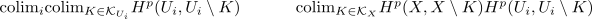

poincare duality lemma for a chain of open subsets
Proposition
Let \(M\) be an \(n\)-dimensional manifold, $U_i$ be a countable chain of open sets such that
\begin{align*}
M = \bigcup U_i
\end{align*}
Suppose furthermore $\sigma_M \in H_n^{\mathrm{lf}}(M;R)$ is an R-Orientation such that
\begin{align*}
- \cap \sigma_{U_i}: H^n_c(U_i;R) \rightarrow& H_{n-p}^{\mathrm{lf}}(U_i;R)
\end{align*}
is an isomorphism
Then
\begin{align*}
- \cap \sigma_{M}: H^n_c(M;R) \rightarrow& H_{n-p}^{\mathrm{lf}}(M;R)
\end{align*}
is also an isomorphism
Proof
\begin{displaymath}
\begin{tikzcd}
H^p_c(U_i) \arrow[]{r}{\cap o_{U_i}} \arrow[]{d}{\iota}& H_{n-p}(U_i) \arrow[]{d}{\iota}\\
H^p_c(U_j) \arrow[]{r}{\cap o_{U_j} }& H_{n-p}(U_i}
\end{tikzcd}
\end{displaymath}commutes.
where by definition
\begin{align*}
o_{U_i} = \mathrm{inc}^{#}(o_{U_j})
\end{align*}
This shows
\begin{displaymath}
\begin{tikzcd}
\mathrm{colim}_i H^p_c(U_i) \arrow[]{d}{}& \mathrm{colim}_} H_{n-p}(U_i) \arrow[]{d}{}\\
H_c^p(X) \arrow[]{r}{} & H_{n-p}(X)
\end{tikzcd}
\end{displaymath}also an isomo:
\begin{align*}
\{(i,K) \vert i \in I, K \subseteq U_i \mathrm{compact}\} \rightarrow \mathcal{K}_X \\
(\iota, K) \mapsto& K
\end{align*}
is surjective, hence also cofinal
therefore
\begin{align*}
\end{align*}

where the bottom iso is given by relative singular homology and excision theorem